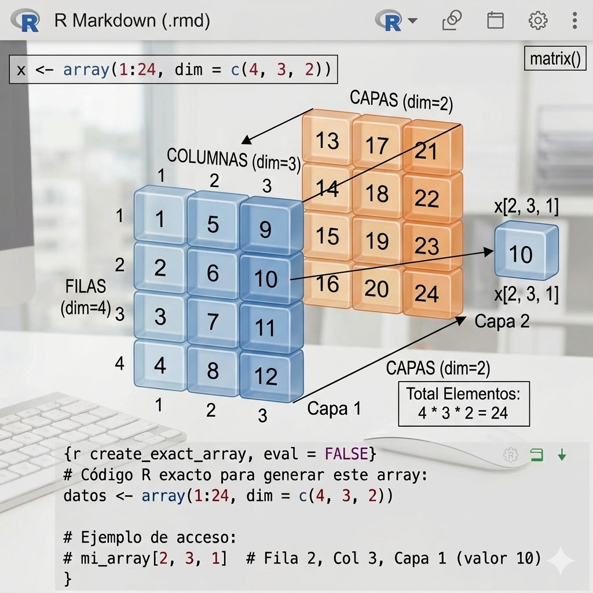

Los arrays (arreglos), que son la evolución natural de las matrices en R.
Mientras que una matriz es una estructura de dos dimensiones, un array puede tener tres o más dimensiones. Puedes imaginar un array como un “bloque” o “cubo” de datos, donde tienes múltiples matrices apiladas. El cubo de Rubik puede considerarse un array,
Sintaxis general:
Ejemplo:
Creamos un array de 24 elementos con filas =4, columnas =3, capas/profundidad = 2)
El número de elementos serán 4 filas * 3 columnas * 2 capas= 24 elementos
Analicemos tu código paso a paso:
## , , 1
##
## [,1] [,2] [,3]
## [1,] 1 5 9
## [2,] 2 6 10
## [3,] 3 7 11
## [4,] 4 8 12
##
## , , 2
##
## [,1] [,2] [,3]
## [1,] 13 17 21
## [2,] 14 18 22
## [3,] 15 19 23
## [4,] 16 20 24Conocer las dimensiones (filas, columnas, capas) del array x:
## [1] 4 3 2Aquí has creado un array 24 elementos con dimensiones 4
(filas), 3 (columnas) y 2 (capas o “slices”).
Es decir, tienes dos matrices de 4x3.

Sintaxis del elemento al que se quiere acceder:
nombre_array[numeroFila, numeroColumna, numeroCapa]
## [1] 10Selección de una columna:
## [1] 5 6 7 8Selección de una capa/matriz:
# Al poner 1 en la tercera posición del índice (numeroCapa), estás extrayendo la primera matriz completa del cubo.
x1 <- x[ , , 1]
x## , , 1
##
## [,1] [,2] [,3]
## [1,] 1 5 9
## [2,] 2 6 10
## [3,] 3 7 11
## [4,] 4 8 12
##
## , , 2
##
## [,1] [,2] [,3]
## [1,] 13 17 21
## [2,] 14 18 22
## [3,] 15 19 23
## [4,] 16 20 24Imaginemos que tenemos el array x creado anteriormente de dimensiones (4 filas, 3 columnas, 2 filas)
(No entiendo bien)
## x
## [1,] 1 50
## [2,] 2 55
## [3,] 3 50
## [4,] 4 55
## [5,] 5 50
## [6,] 6 55
## [7,] 7 50
## [8,] 8 55
## [9,] 9 50
## [10,] 10 55
## [11,] 11 50
## [12,] 12 55
## [13,] 13 50
## [14,] 14 55
## [15,] 15 50
## [16,] 16 55
## [17,] 17 50
## [18,] 18 55
## [19,] 19 50
## [20,] 20 55
## [21,] 21 50
## [22,] 22 55
## [23,] 23 50
## [24,] 24 55## [,1] [,2] [,3] [,4] [,5] [,6] [,7] [,8] [,9] [,10] [,11] [,12] [,13] [,14]
## x 1 2 3 4 5 6 7 8 9 10 11 12 13 14
## 50 55 60 50 55 60 50 55 60 50 55 60 50 55
## [,15] [,16] [,17] [,18] [,19] [,20] [,21] [,22] [,23] [,24]
## x 15 16 17 18 19 20 21 22 23 24
## 60 50 55 60 50 55 60 50 55 60